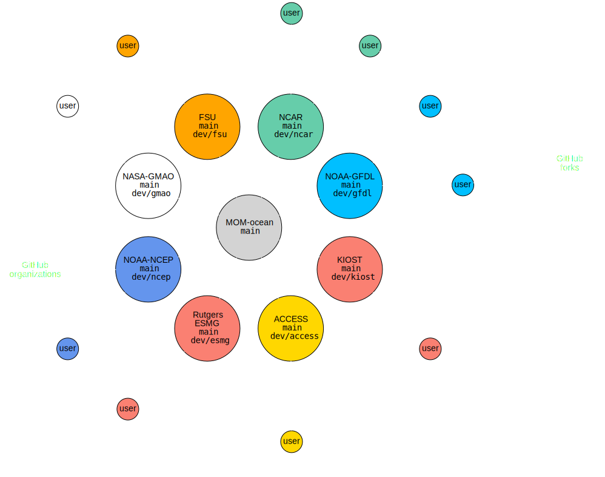

Marshall Ward
2022-10-18
Presentation is available at
TODO: Snapshot of website
https://github.com/NOAA-GFDL/MOM6.git
MOM6-examples pulls from this repository.

Get the repository:
$ git clone https://github.com/NOAA-GFDL/MOM6.git --recursiveThis creates a remote to NOAA-GFDL named origin.
$ git remote -v
origin https://github.com/NOAA-GFDL/MOM6.git (fetch)
origin https://github.com/NOAA-GFDL/MOM6.git (push)Go to GitHub, fork MOM6, and create a new remote
Log into GitHub, go to MOM6:
Fork MOM6 to your account:
Create a remote to your new GitHub repo:
$ git remote add marshall https://github.com/marshallward/MOM6.gitSync to the remote:
$ git push marshall dev/gfdlYou want to start a new project! Create a new branch:
$ git checkout dev/gfdl # Switch to dev/gfdl
$ git pull # Sync with origin
$ git branch my_feature # Create a new branch
$ git checkout my_feature # Switch to new branchChanges to my_feature will not alter dev/gfdl.
Some superficial example
Linus quote
GitHub handles pull requests (PRs) between repositories.
The PR moves commits between repositories.
$ git fetch origin dev/gfdl # Update the target branch
$ git checkout my_feature # switch to feature
$ git rebase -i dev/gfdl # sync commits
$ git push marshall my_feature # Push to personal repoUse amends and force pushes for minor changes:
$ vim src/my_file.F90 # Modify code
$ git add src/my_file.F90 # Add to commit
$ git commit --amend # Change the commit
$ git push --force marshall my_feature # Rewrite historyExamples:
No one cares about typos! Don't put them in the history
TODO
Explain FF
"Continuous Integration"
Briefly describe test suite
"Extra" step
Show the process
Add a diagnostic? Doesn't really matter...
Hold hands here, make it simple...